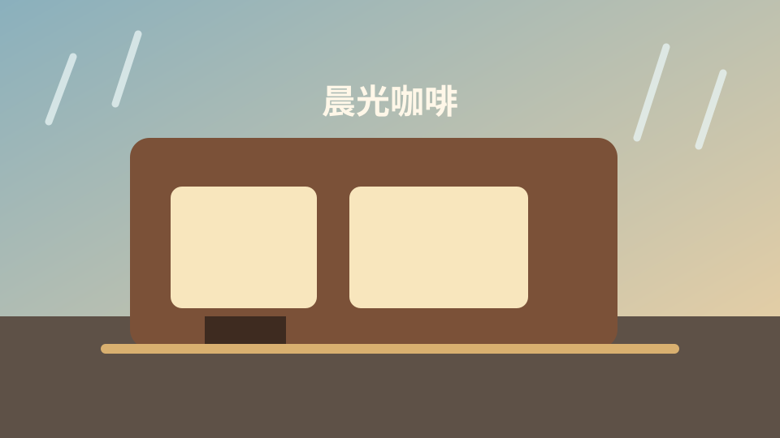

路線大地圖
天使惡魔館章節路線
Chapter 1
晨光咖啡新人訓練

旁白
Chapter 1：第一天上工
Ari
太陽窗邊的母音精靈
ㅏ
發音：a
ㅏ 像窗邊灑進來的光，張開嘴說 a。
訓練卡片
基本母音 10
複合母音 11
基本子音 14
雙子音 5
送氣音比較
聽出多一口氣
播放聲音後，選出正確音節。
先點選素材，合成出目標句。
第二章：龜仙CU便利商店
空店開張前，先決定家具位置和面向
今日客人
放置貨架和冰箱後開始營業。
按「調整佈置」可以重新擺家具和面向；存檔後就用那個店面營業。
店長
你在幹嗎？
ya
新人教育訓練測驗
40 音確認
答對：0
答錯：0
請選出發音：a
點擊後，念出這張圖卡的韓文發音。
第 1 題 / 10 題